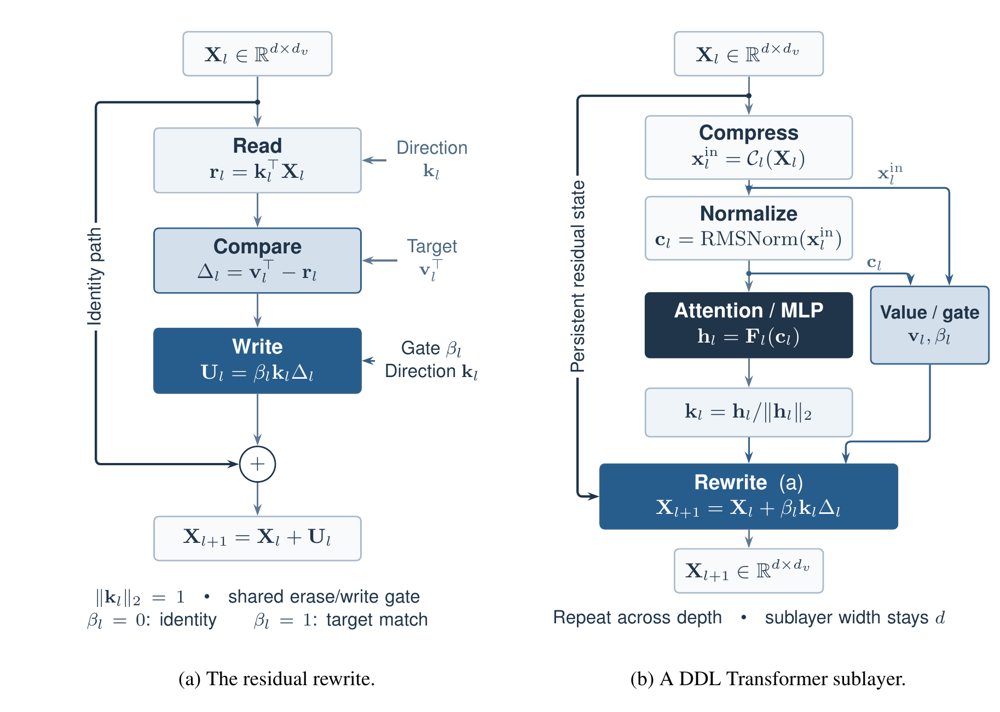

Standard residual networks approximate the ODE $\dot{\Xb} = \Fb(\Xb)$ via an additive update $\Xb_{l+1} = \Xb_l + \Fb(\Xb_l)$. DDL generalizes this by applying a rank-1 transformation to the hidden state matrix $\Xb \in \RR^{d \times d_v}$. The Delta-Res block update rule is defined as:
$$ \Xb_{l+1} = \underbrace{(\Ib - \beta_l \kb_l \kb_l^\top)}_{\text{Delta Operator } \Ab(\Xb)} \Xb_l + \beta_l \kb_l \vb_l^\top $$

The network learns the reflection direction $\kb \in \RR^d$, the value vector $\vb \in \RR^{d_v}$, and the gate $\beta \in \RR$. This formulation couples the "erasure" of old information (via projection onto $\kb$) with the "writing" of new information (via injection of $\vb$), scaled synchronously by the gate $\beta$.